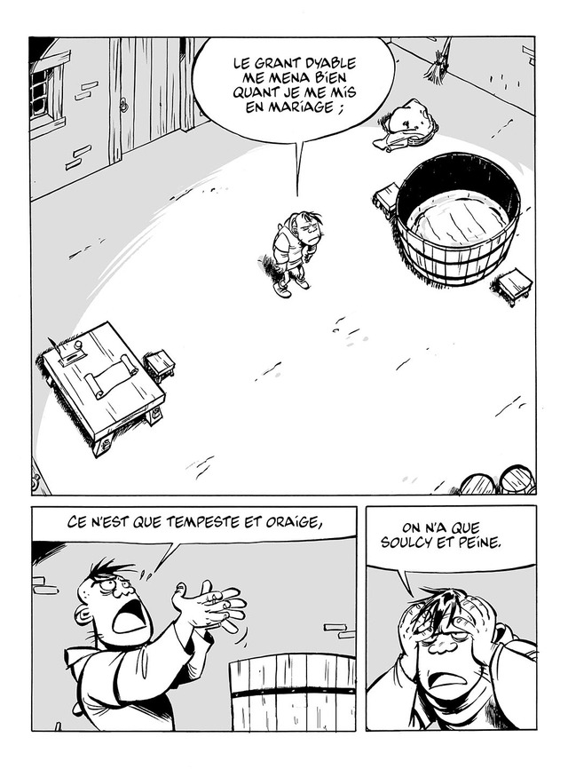

CUVIER — Chapitre 1
8 pages · Lecture de gauche à droite.



Dates de publication de démonstration, sans valeur de datation historique des œuvres.
8 pages · Lecture de gauche à droite.

Dates de publication de démonstration, sans valeur de datation historique des œuvres.